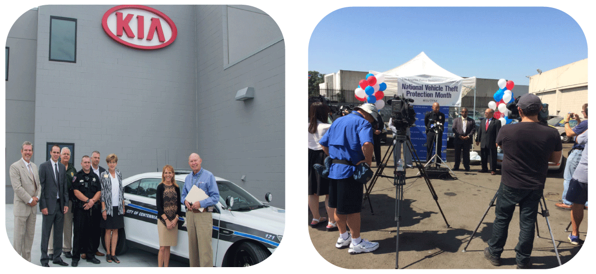

#NVTPM social tiles
During my internship with LoJack Corporation in 2017, I was placed in charge of designing social media tile graphics promoting common sense safety tips to help raise awareness and prevent auto theft. GIF versions of these graphics were also made because after interviewing users, we found that they were more eye catching.
The hardest part of this project was balancing brand guidelines that were given to me. Because LoJack was going through a re-branding at the time, these tiles had to align to both new and old brand guidelines.
I was happy with the result as the blocky graphics and bold colors of the old brand guidelines were softened by the silver toned minimalistic and clean look of the new brand.


I was asked to create a marketing template for future use of the marketing department after I completed my internship. I decided to use data that was collected on a monthly basis by the law enforcement half of the company to create a template that was both educational and interesting. I interviewed users about what data topics were most interesting. Via survey I found that people responded well to seeing large recovery values and brands of stolen cars that had been recovered.
I created a guide for running the algorithms on the data that was collected each month. The creation of the graphic is now as simple as filling in a few text fields. Here you can see the template I created with Adobe Illustrator. If you click on the title of this project, you can see that the marketing team is still continuing to use the template after completion of my internship.
Poster Work
This sales sheet is featured in over 35 dealerships in the surrounding Las Vegas Area. I researched regional theft statistics and worked with regional sales directors to decide what information was most compelling. This was a more creative and fun project that I worked on during my time as an intern. I think the "Welcome to Vegas" styled sign was recognizable enough for people to pay attention to the sell sheet and recognize the auto theft issues in the Vegas area.
Event Organization
I was in charge of organizing events during National Vehicle Theft Protection Month with police departments and law enforcement agencies across the country. Last summer I organized 3 main events in Roseville California, Denver, Colorado and Los Angeles, California with LAPD.

Research
I was also in charge of content creation throughout the summer leading up to and during the campaign. I used government resources like the NICB database and the FBI Uniform Crime Report for supporting statistics and data.
Click these links to view my articles about how auto theft disproportionately affects the poor, why layered security approaches are important, chop shops, Info on construction asset theft , and reasons why auto theft is on the rise.